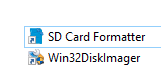
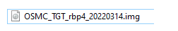
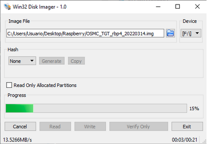

Para poder usar OSMC en nuestra raspberry pi tendremos que instalar en la tarjeta micro sd desde un ordenador los siguientes programas:
Ahora nos bajamos la ISO del OSMC
Abrimos el programa sd Formater para formatear la tarjeta sd, seleccionamos la opción format y cuando acabe hacemos click en aceptar y cerramos el programa
Abrimos el programa Win32DiskImager y seleccionamos la ISO descargada de antes
Cuando ya tenemos seleccionada la ISO tendremos que hacer un click en write y cuando termine ya tendremos preparada la tarjeta sd y podemos introducirla en la raspberry
